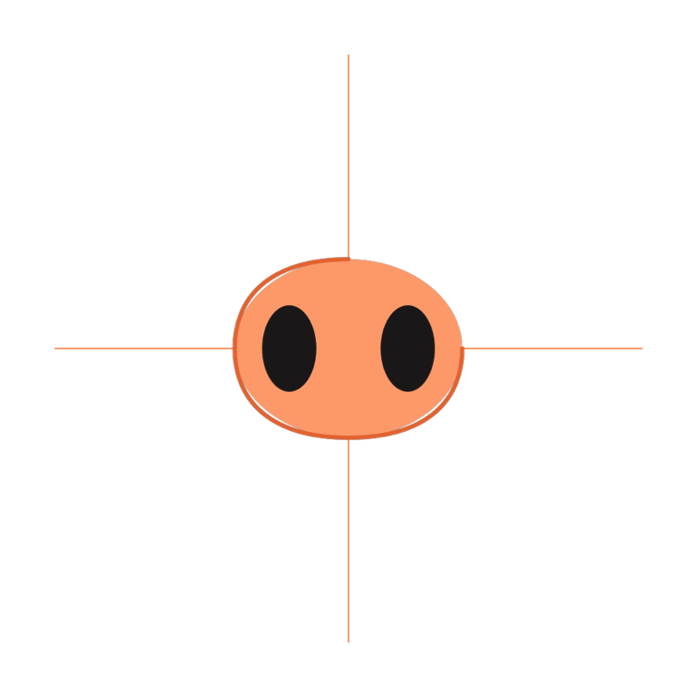
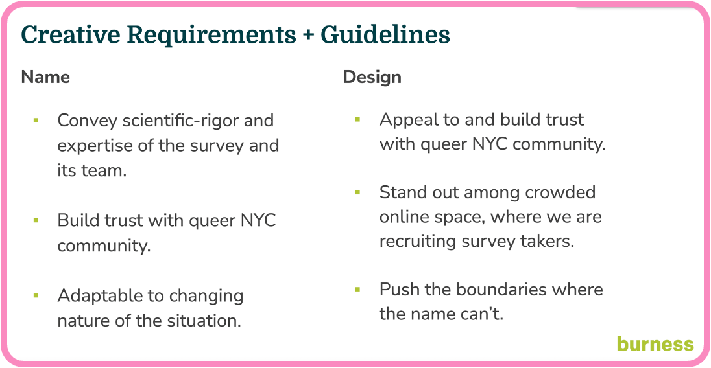
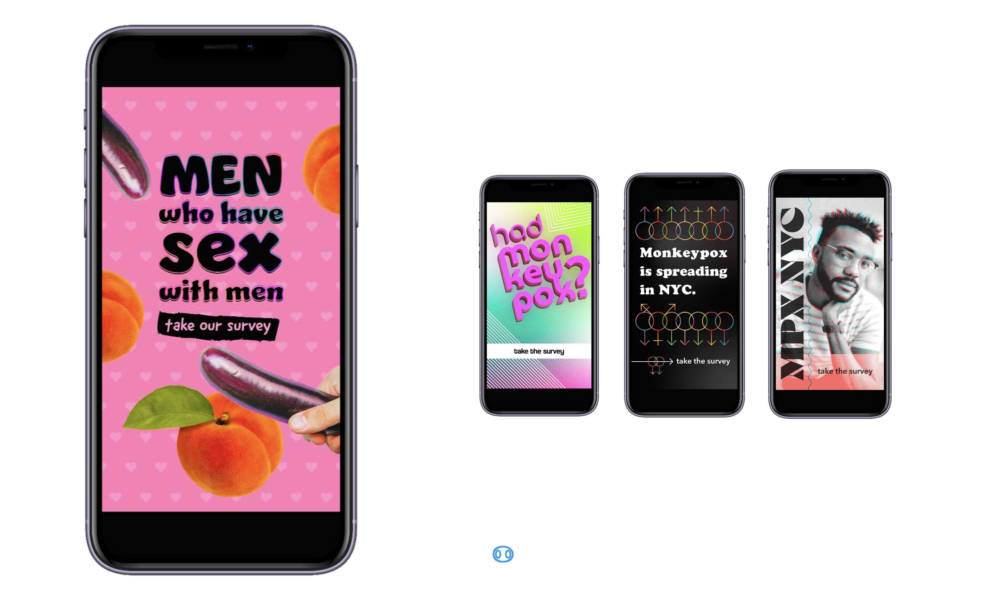
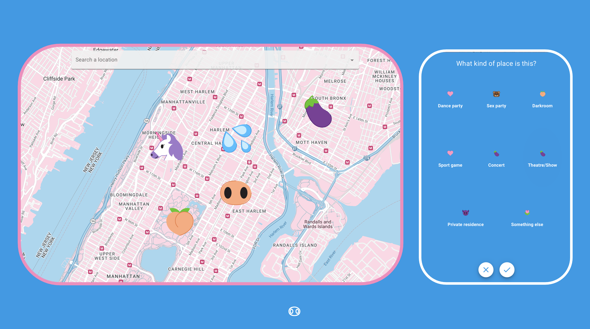

2 Data Collection
2.1 RESPND-MI Community Forum and Investigator team
At the outset of the project we prioritized rapid consultation with a wide variety of stakeholders (see @roth2023global) with the goals of: validating our understanding of the unfolding health threat; understanding how planned study and communication activities fit in a broader response to mpox; gathering feedback on our plans; and developing an audience for the study results.
Though, much of the initial engagement occurred through one-on-one meetings, the RESPND-MI team host an open meeting on 27 June 2022, inviting city and state government officials, local LGBTQ+ organizations with health or advocacy programs, individual activists, researchers, leaders in the nightlife/entertainment industry of New York, and queer and trans people in general. Participants requested a weekly call to enable collective learning and discussion about the outbreak. We named the call the RESPND-MI LGBTQ+ Community Forum, opened it to the public, and advertised it on our website, social media, and through the press. About 80 individuals participated in the community forum the initial meeting to the final call at the end of August 2022.
The Community Forum became a mechanism for coordinating action across organizations and allowed the development of a local, comprehensive, collective response to mpox. Members of the Community Forum collaborated to develop and share resources such as vaccine locators, took political action through policy briefs, and strengthened the programmatic response by creating health communications materials, etc. (see @roth2023global).
The Community Forum strongly shaped study plans, including the recruitment campaign, the design of a novel spatial data collection tool, and the development of our study questionnaire. Sustained engagement in this group led to several concrete improvements in research approach: for example, a criticism of the initial communication approach was that it centered cisgender men to the exclusion of transgender women and transgender men. This was not warranted given that there was no information about the impact of mpox on these communities, and given that transgender people and cisgender people are part of the same social and sexual networks which woudl likely be affected by mpox. We responded by inviting the participant who raised that issue to join the study team, and over time attempted to continually improve gender related language and iconography in the project through discussion among investigators.
2.2 MPX NYC marketing and communication
To maximize the speed of recruitment, we invested in a bilingual, culturally competent communication campaign in collaboration with a marketing agency. The brief was to create a name and marketing concept that convey scientific rigor, build trust with the community, and stand out in a crowded online marketplace (see Figure 2.1). As a starting point, the RESPND-MI team suggested a campaign that playfully uses emojis that have sexual connotations in queer and trans communities, and that integrates LGBT social media influencers as a communication channel.

Two campaign names and four marketing concepts (see Figure 2.2) were developed by the marketing agency and presented to a meeting of the RESPND-MI Community Forum. The final concept and name were decided by consensus during that meeting.
Marketing materials were developed based on the concept. Materials included graphics, videos by queer influencers, and a style guide (including colors, icons, and fonts) for all public-facing materials of the MPX NYC study. We organized these materials into a “social media toolkit” and shared them through the study website to enable individuals and organizations to easily share them through their own social media accounts. We used these materials in advertisements placed through Grindr, Twitter, Instagram, and outdoor electronic billboards.

2.3 Novel spatial data collection tool
To encourage disclosure of sensitive information related to sex, health status, and physical location, we were careful not to collect information that could be used to identify participants once study data become available to external researchers. For instance, age was collected as an ordinal variable (using 10-year bands) rather than as an integer.
To collect information on important physical locations, we designed, tested, and implemented a novel online survey instrument which captures rich spatial data while protecting participant anonymity. It does this by coarsening the spatial data to the census tract level before it is transmitted from the participant’s device to the study database. Census tracts are non-overlapping spatial units that exhaustively partitions the United States into areas ranging from \(2500\) to \(8000\) in population size [@uscensus2022]. Along with standard question formats (multiple choice, single choice, text field etc.) the instrument included what we term the location-input question.
The location-input question, elicits all places of a particular type from the participant. Like the Google maps interface, the location-input question displays a map with detailed geographic information including place names, roads, and neighborhood names, and includes a search bar (see Figure 2.3). This interface was chosen to avoid eliciting addresses or zip-codes for places other than participants’ residence, which are more difficult to remember than the name of a location, its approximate address, cross streets, neighborhood, or any of the parameters admitted by the google maps search engine. We did this to maximize data completeness.
Participants enter elicited places by tapping on the displayed map. For each tap, a pop-up window with a series of questions about that place is triggered, and a marker is displayed. The spatial and response data are saved as part of the participant’s survey record.
The front end of the MPX NYC survey instrument was developed as a single-page web application using the React/NextJS framework [@nextjsd2024] with visual design based on the MPX NYC style guide. The Google Maps API [@google2024] provides the displayed map and returns longitude-latitude coordinates for each marker placed on the map. The Federal Communications Commission API [@federal] receives longitude-latitude coordinates and transforms them into census tract identifiers. The back end was a custom-built neo4j graph database [@neo4j2024].

2.4 Inclusion and Exclusion Criteria
Potential participants were included in the study if they consented to participate, were over 18 years of age, identified as transgender, gay, bisexual, or as men who have sex with other men, and were in New York City in the four weeks preceding their participation. Potential participants were excluded if they were younger than 18 years of age or they withdrew consent.
2.5 Translation
All study materials were professionally translated from English to Spanish. The translation was reviewed by six professionals in health-related fields whose primary language is Spanish.
2.6 Ethical Review
The study was reviewed and approved by the T.H. Chan School of Public Health Institutional Review Board (IRB22-0761).